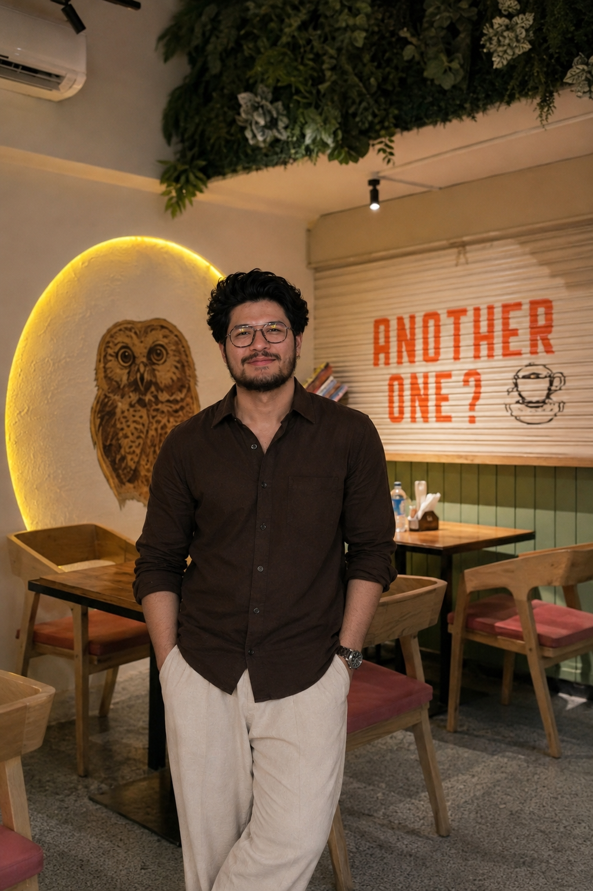

01
AUTOMATION / QA
E-Commerce
Test Automation
Automated key user flows including login, product search, cart actions and validation scenarios.
View on GitHub ↗// hello, i'm
I test products with curiosity, break things with purpose, and build automation that makes quality repeatable.

$ run regression --suite=web
✓ 150+ test cases executed
✓ defects tracked & verified
I'm an MCA graduate focused on software quality, manual testing, API testing and Selenium automation. I enjoy understanding requirements, exploring edge cases, reproducing defects and making sure fixes actually stay fixed.
My current toolkit includes Selenium WebDriver with Java, TestNG, Maven, Postman, Jira and SQL. I'm also exploring AI tools and product thinking to grow beyond testing into a stronger technology professional.
Not a list of buzzwords — these are the technologies and practices I've worked with or actively learned.
Automated key user flows including login, product search, cart actions and validation scenarios.
View on GitHub ↗Built a locator fallback strategy to improve automation stability against dynamic UI changes.
GitHub ↗Mobile application using image input to detect plant diseases and provide remedy suggestions.
Details on request ↗Gondwana University · Ballarpur
RTMNU University · Nagpur
Simplilearn · Masai / IIT Roorkee
// one last thing
Have a QA role, testing project or opportunity? I'd love to hear about it.